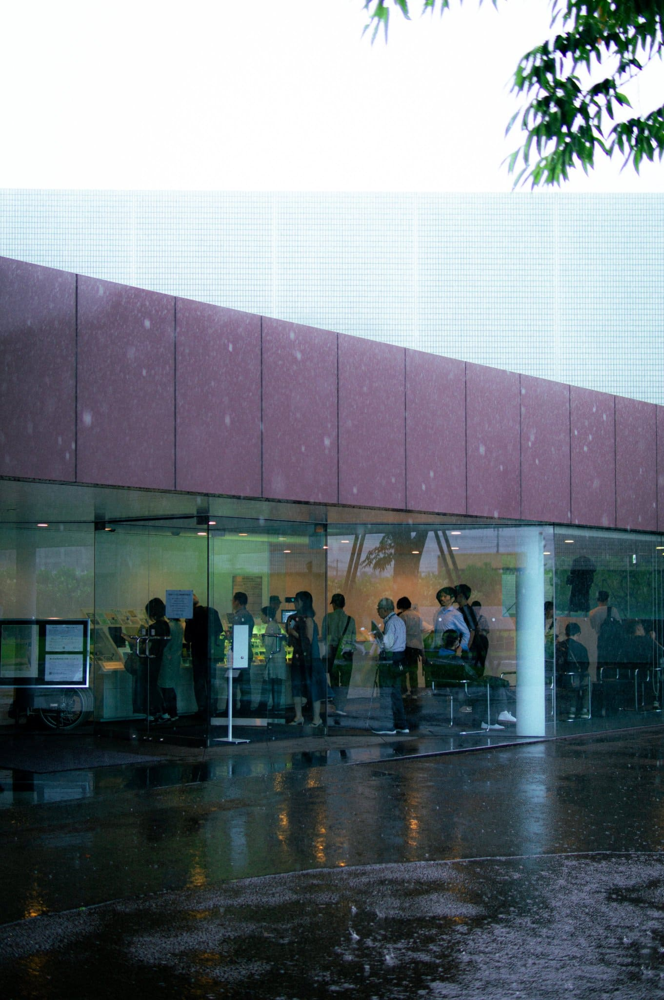
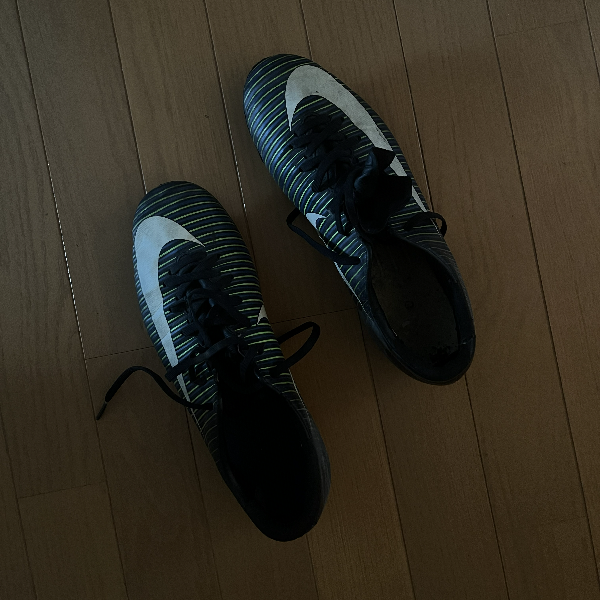
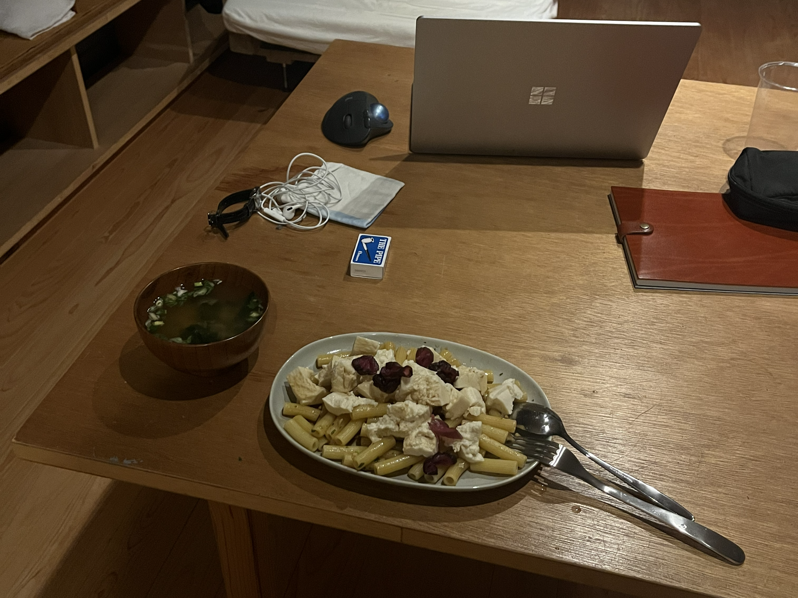

記録を行う。
東京の大学院を3月に卒業してから、約半年経った。その間にいくつかの設計事務所を訪ねてインターンやアルバイトという名の就職活動を続けていた。5月ごろに行っていた設計事務所では、あと一歩で就職というところまでは進んだのだが、事務所側の都合で白紙になった。
8月は、大学の先輩が務めている設計事務所がSDレビューを通ったということで、模型の制作バイトに追われる日々であっという間に過ぎ去った。久々の休みを手に入れた9月中旬に、仙台の祖父に会いに行った。今年の正月に大病を患ってから、体調は優れなくそんなにもう長くないということは何となく知っていた。病床に伏す祖父に、「岐阜の設計事務所にいってくるよ」と声をかけて千葉に帰った。私が千葉に帰ってきて数時間後に祖父は亡くなった。
6月末に訪れた資生堂アートハウスの外観
物心ついてから初めての葬儀だった。私の祖父母たちは、それぞれ仙台と川崎にいる。千葉に住んでいることもあって、よく会うのは川崎のほうの祖父母だった。だから、仙台の祖父母とは会って年に1回ほどであったし、高校、大学の間はほとんど会っていなかったと思う。仙台には、いとこがいる。彼らは仙台の祖父によく会っていたのだろう。葬儀ではすごく悲しんでいた。私は彼らよりも悲しんではいけないのかな、なんて考えてしまうのが嫌だった。
それから２週間後くらいに岐阜へと向かった。お金がない私は、新幹線なんてもちろん乗れずに名古屋まで3100円の高速バスに乗った。高速バスは6時間くらい乗っていた。23時について漫画喫茶に入った。高速バスも漫画喫茶も狭くて居心地は悪い。でも安いから仕方がない、背に腹は代えられない。
高校のときに使用していたサッカースパイク
岐阜にきてから最初の２週間ほどは事務所が借りている部屋で寝泊まりしている。たぶん30平米くらいはあって、料理ができないことを除いてはすごく居心地がいい。ネットで賃貸を探すと、同じくらいの面積が4万くらいで借りられることがわかった。東京じゃ絶対に無理だ。20平米くらいで7万くらいする気がする。実家暮らしだったから詳しくはないけど何回か調べたときの肌感覚ではそのような感じだった。
憲法25条、いわゆる生存権では「すべて国民は、健康で文化的な最低限度の生活を営む権利を有する」とある。ちょっと前までは、その最低居住面積水準を25平米としていたらしいが、いつのまにか削除されているみたいだ。暮らし方が昔とは異なってきたうんぬんかんぬんで。確かにいまの部屋はすごく居心地がいい。岐阜に来て初めて、世の中には安くて居心地のいい場所もあるんだということを知った。
母はお墓に入れられるより、海に散骨してほしいとよく言っていた。お墓は維持管理が大変だし、費用も大変な額になるらしい。法の問題が絡んできて、今後海洋散骨がどうなるのかは分からないけど望むならそうしてあげたいと思う。費用もどうなのかは分からないけど、それを居心地がいいだろうなと思っているならそうしたい。なんにだってお金はいる。フリーターにも飽きてきたし、千葉の同じ倉庫で働いていた日雇い仲間には「頑張って来いよ」と懐かしそうな眼をして言われた。卒業してから半年経ってしまったし、いくつかの大きな出来事もあった。この土地に５年くらい居るのだろうか。その間にもいろいろなことが起きるかもしれない。これからさきがどうなるかは分からないけど（わからないことだらけだ）、たまにはこうやって記録をとっていきたい。そういえば、祖父にも弔われ方の希望はあったのだろうかと、ふと思った。
明日は祝日だ。不動産屋にいって長良川を見に行こう。
電気ケトルだけで作られたパスタ料理
back to Logs


